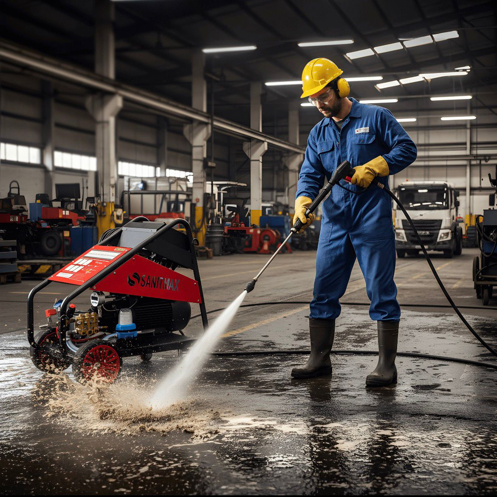
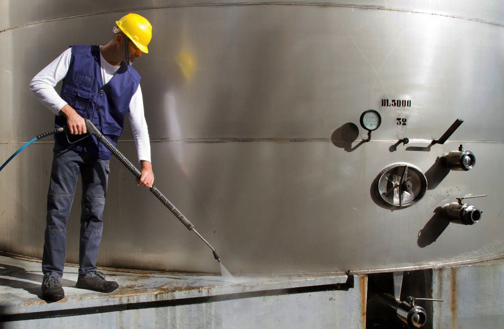

Onze industriële hogedrukreiniging is de oplossing voor het hardnekkigste vuil. Of het nu gaat om het reinigen van grote opslagtanks, fabrieksvloeren of zware machines; wij gebruiken de juiste druk en techniek om alles weer als nieuw te krijgen.
Grondig en Efficiënt: Zoals te zien op onze projectfoto's, beschikken wij over professionele apparatuur die roest, vet en diepgeworteld vuil verwijdert zonder de ondergrond te beschadigen. Wij werken met oog voor detail en zorgen voor een veilige werkomgeving tijdens onze werkzaamheden.

